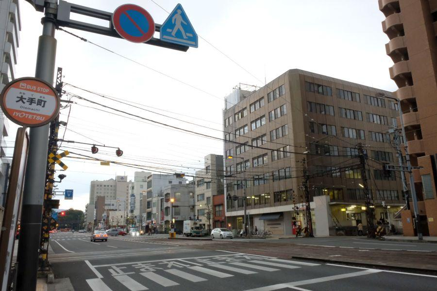

日本で唯一！ 鉄道線と路面電車の直角平面交差 < 伊予鉄道大手町駅前のダイヤモンドクロッシング / 愛媛県松山市 >
いで湯と文豪の街・愛媛県松山市。
市民の皆さんや 市街地観光への足は、専ら伊予鉄道(通称 : いよてつ)が担っています。
開業は私鉄として日本で二番目に古い 明治21年(1888)。四国では最も古い鉄道。
(※ 現存最古は 南海電気鉄道の明治18年)
伊予鉄道には、
鉄道線(郊外線)
と
軌道線(市内線)
が運行されていますが、その中で両者が直角に交差する珍しい場所が存在します。
日本で唯一・線路が直角に交わる平面交差

大手町駅前停留所(おおてまきえきまえていりゅうじょ)
大手町駅(おおてまちえき)
左から右へ伸びているのが 市内線・大手町線の一部であり "大手町駅前停留所"
それと直角で交差する形になっているのが、郊外線・高浜線の一部であり "大手町駅"
路面電車が普及していた時代は 全国どこででも見ることができた平面交差ですが、モータリゼーションの発達により 街から路面電車が消え、このような風景は姿を消していきました。
現在 鉄道と路面電車が平面で交差する形が見られるのは、この場所と 同じ伊予鉄道の古町駅(こまちえき)のみ。
古町駅は斜めに交差する形状なので、種別の異なる鉄道が直角で交差するのは 大手町駅だけです。
※ 土佐電鉄のはりまや橋停留所は ＜後免線・伊野線・桟橋線＞が直角交差しているが、これは同じ種別である路面電車同士
ダイヤモンドクロッシング
鉄道の平面交差のことを 「ダイヤモンドクロッシング」 と呼びます。線路が交差することで 中央部の形状がその形状に見えることが、名称の由来。
郊外線・市内線 共に線路幅(＝軌間)は1,067mm。JR在来線と同じ "狭軌(きょうき)" です。
伊予鉄道は電車なので、電力の供給を受けなければ 走行することはできません。
すなわち 線路上部に張られた架線が存在しますが、線路の交差と同様 架線にも "ダイヤモンド" が現れることになります。
架線電圧は600Vで これは軌道法に準じた値。
単純に 電圧の数値が高ければ、より高出力な運転が可能。大手私鉄などは1500Vで運転されています。
路面電車は 一般的に駅間が近く、走行に関して それほどの高性能を必要としないので、他にも様々な要因から 600Vに制限されています。
鉄道線に電圧の制限は無いので、通常であれば もっと高電圧で運転することも可能ですが、路面電車と空でも交差する高浜線では そちらに合わせる必要が生じます。
三線 ＜横河原線・郡中線・高浜線＞ ある鉄道線のうち、高浜線以外は 750Vで運転されているため、それぞれの電圧に変換する 変電所が必要となる。
伊予鉄道の営業距離だけで見ると、通常 変電所は一箇所で賄うことが可能です。しかし電圧が異なる路線を運行するために、変電所を二つ運用しています。
ダイヤモンドクロッシングは 線路に目に行きがちですが、保守管理に関しては 電力関係の方が手間がかかっています。
ダイヤモンドクロッシング周辺の風景
市内線・大手町駅前停留所から東方向を眺めたところ
森が見える場所が松山城の一角・西堀端であり、
本町方面... 本町線
松山市駅・道後温泉... 城南線
への乗換駅です。
JR松山駅・松山市駅から道後温泉へは 通しで運転されているので、ここでの乗り換えは不要です。
市内線・大手町駅前停留所から西方向を眺めたところ
市内方面への停留所は、ダイヤモンドクロッシングの西側にあります。
奥・突き当りに見えている建物はJR松山駅。距離にして約250mなので、徒歩でも十分歩く事ができます。
鉄道線・高浜方面
高浜線は、末端の 梅津寺 － 高浜間 を除き、複線電化されています。
戦前に行われた改軌・電化・複線化によって全線電化・複線化を果たしていた高浜線ですが、戦時中に金属供出令を受けて単線化されます。その際に取り払われた片側のレールは、予讃線の南予延伸に転用されました。
戦後 順々に再複線化されていきましたが、末端区間だけは複線が復活していません。
改軌(かいき)...
伊予鉄道では、軽便鉄道として開業したため 当初の線路幅は762mm。昭和6年(1931)に 1,067mmの現在の線路幅に改められた。
軽便鉄道時代は小さな蒸気機関車が客車を牽く列車が運行されていた。松山で教鞭を執った夏目漱石をして 「小さなマッチ箱のような列車」 と評されたその鉄道が、現在の坊ちゃん列車の前身です。
鉄道線・松山市方面(大手町駅)
鉄道線の主力車両・3000系
色こそ 現在の伊予鉄標準色に再塗装されていますが、この顔に見覚えがある方もいらっしゃるのではないかと思います。元々は東京の京王帝都電鉄・井の頭線で走っていた車両です。
1500Vで走行できる性能を持ちながら 現在は持てる能力を内に秘め、高浜線では600V、横河原線・郡中線では750Vを受けて走っています。
コトバスエクスプレス松山駅東停留所は、すぐ近く
琴平バスが運行している東京・名古屋方面へ発着するバスは、こちらJR松山駅から伊予鉄大手町駅の間に位置します。
ここから発着するバスは、徳島県のコトバスステーション鳴門で、本線バスに乗り換えとなります。
全国で唯一となった 鉄道線・市内線が直交するダイヤモンドクロッシングは、このすぐ近くです。
大手町駅のダイヤモンドクロッシング
< 自家用車 >
高松駅から 約2時間20分、159km
松山空港から 約20分、6.1km
JR松山駅から 約3分、250m
※ 主な地点からの最速・最短距離